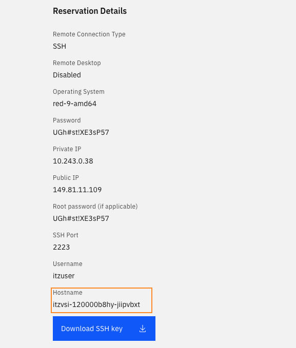

Managing Compliance¶
Objective¶
In order to use Compliance dimension, an organisation need to ingests compliance assessment data using Concert workflow. This will deliver a holistic view of the compliance posture of its application environments.
In this lab, you will use concert workflow to ingest compliance data from a rhel vm in IBM Concert.
We will use your VM concert as the target of the compliance job.
Prerequisite¶
- IBM Concert must be installed
- Concert workflow must be installed
Content¶
Run compliance workflow¶
You are going to use a workflow called CIS RHEL9 OpensSCAP Compliance Scan provided by IBM Concert to ingest compliance data in Concert. This workflow automates the CIS compliance scan for RHEL 9 using OpenSCAP.
Official documentation is here
Create an environment¶
In order to be able to ingest compliance data in IBM Concert, you must have an environment defined in IBM Concert with the hostname of the machine that will be scanned.
To create this environment, follow these steps:
-
From your VM Rhel 9 reservation page, get the VM hostname (If you are connected in ssh on your vm, you can also get your hostname with the
hostnamecommand)  -
From the arena view on your concert UI, select Define and upload->Define Environment->From resources

-
In the Define an environment screen, enter following informations:
-
name: your VM hostname
- type: other
- purpose: what you want
{kind=link}
Then click next, next and Create
Create a compliance catalog and a compliance profile¶
Official documentation is here
- A compliance catalog serves as the single source of truth for an client organization's compliance-related policies, procedures, and standards. Concert supports compliance catalogs based on the NIST 800-53 (Rev4 for OCP and Rev5), PCI, or a custom standard.
To create a catalog for our CIS RHEL9 OpensSCAP Compliance Scan workflow, follow these steps:
- Navigate to Dimensions->Compliance
- Select Catalog tab and click Add catalog->From Standards Library button
-
Select CIS Controls entry and click Add
-
A compliance profile represents a subset of controls from a compliance catalog. Each profile specifies a set of rules the scan results will use to assess the overall compliance of the application environments.
To create a profile for our CIS RHEL9 OpensSCAP Compliance Scan workflow, follow these steps:
- Select Profile tab, click Create profile button and select From resources
-
Enter following values and click Create button
-
Name: profile_cis
- Select one or more catalogs: select CIS Controls catalog
- Select controls: Click Select all (or choose specific compliance rules)
Install the workflow in IBM Concert¶
-
Download the CIS RHEL9 OpensSCAP Compliance Scan worflow from the Automation Library
-
Upload the workflow in concert
-
On concert UI, select Workflows->Manage menu
- Select Import button
- And choose the zip file corresponding to the workflow you downloaded in step1 (name CIS_RHEL9_OpenSCAP_Compliance_Scan.zip)
Create an Authentication to ssh the Concert VM¶
CIS_RHEL9_OpenSCAP_Compliance_Scan workflow will do an ssh connection to the target machine to run an OpenSCAP compliance scan. In our case, the target machine is our Concert VM.
Follow these step to create an SSH Authentication:
- On concert UI, select Workflows->Authentications menu
-
Click the Create authentication button and enter following informations:
-
name: concert-vm-ssh
- service: SSH
- Host: your VM Ip public address (from your reservation page)
- Port: 2223
- Username: itzuser
- RSA Private Key: the content of your VM pem key (downloaded from your reservation page)

Run manually the workflow¶
- On concert UI, select Workflows->Manage menu
- Select CIS_RHEL9_OpenSCAP_Compliance_Scan workflow
- Edit the RHEL_OSCAP_Scan step

- Add a sudo before each commands and save your modifications
{kind=link}
-
Execute the worflow
-
Select Run->Run with Custom Inputs, select the authentication entries and click run
{kind=link}
{kind=link}
Note: You can also run the workflow in debug mode. In this case you must give the authentication values in the workflow Start box
The execution of the flow take at least 5 minutes, be patient.
-
Check the ingested data
-
When the workflow is finished, navigate to Administration->Event log menu and check that the compliance file upload is successfull

-
Navigate to Dimensions->Compliance menu and consult compliance data for your concert VM.
Run the workflow from an ingestion job¶
You can create an ingestion job to run the compliance scan
- Navigate to the Administration->Integrations menu
- Click Create ingestion job button
-
Enter following values and click Create
-
Name: Concert VM Compliance
- Connection type: Concert Workflows
- Connection: CONCERT_WORKFLOWS
- Workflow reference: /User/CIS_RHEL9_OpenSCAP_Compliance_Scan
- Concert auth: ibmconcert@0000-0000-0000-0000/ConcertAPIKey
-
Ssh authentication: ibmconcert@0000-0000-0000-0000/concert-vm-ssh
-
Then you can launch the job

Note: you need to reload the page to see if the job is finished
Scheduling the workflow job¶
Alternatively, you can also schedule a workflow job for ingestion of compliance scans into Concert if needed.
- Navigate to Workflows->Schedule menu
- Select Create job button
- Populate the values and click Create

Compliance Management¶
Walkthrough the uploaded compliance assessment:
- Home page - Compliance dimension
- Compliance Dimension
- Select an entry
- Sort by results
- Expand one
- Open ticket